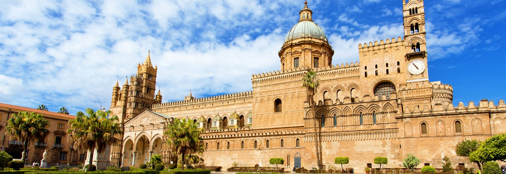
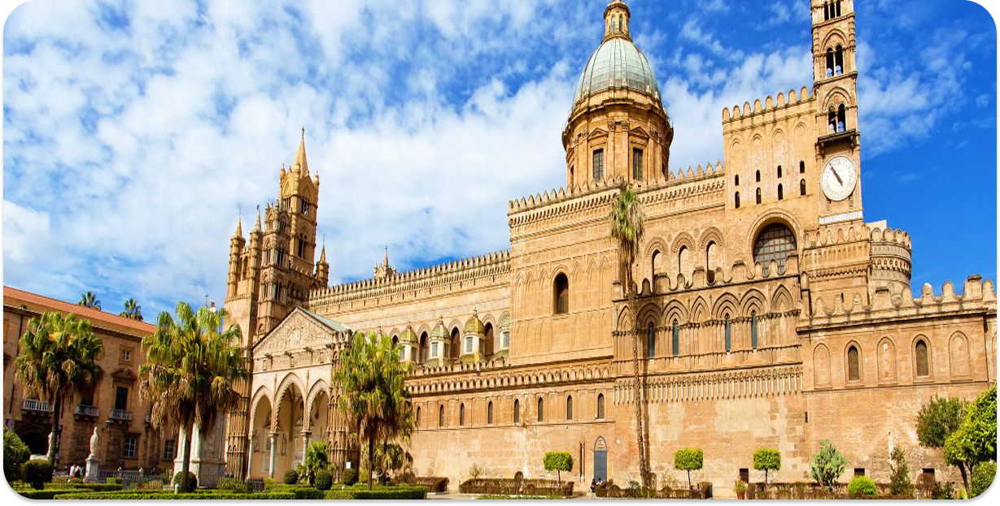
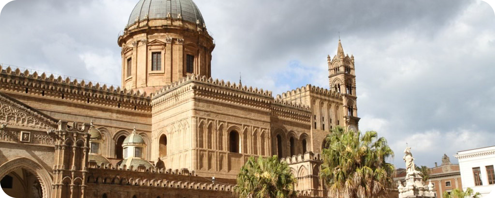
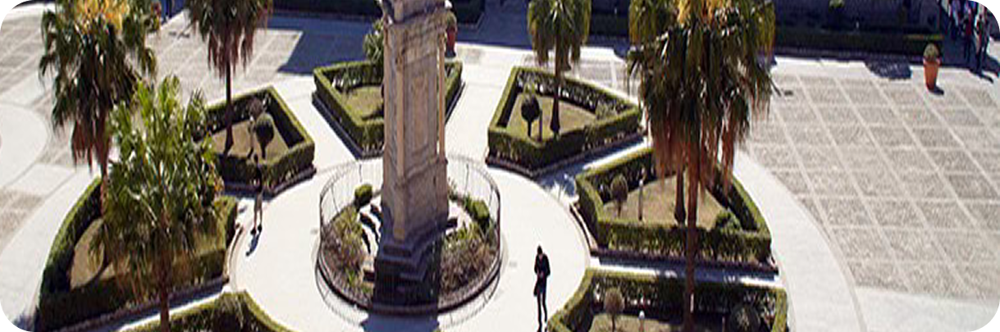
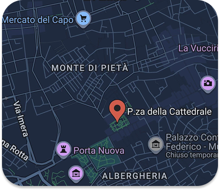

Arte arabo-normanna e barocco si incontrano lungo il Cassaro, l’antico asse del centro storico di Palermo.
La Piazza della Cattedrale è uno degli spazi pubblici più significativi del centro storico di Palermo e si apre dinanzi alla Cattedrale, uno dei monumenti simbolo della città.
La Piazza della Cattedrale si trova nel cuore del centro storico di Palermo, lungo il Corso Vittorio Emanuele, l’antico asse urbano del Cassaro, una delle strade più antiche della città. La piazza si colloca in un nodo urbano importante, circondata da alcune vie storiche come Via Matteo Bonello, Via dell’Incoronazione e Piazza Sett’Angeli, che definiscono il rapporto tra la cattedrale e il tessuto urbano circostante.
La Cattedrale di Palermo è il principale edificio religioso della città, rappresenta l’elemento che struttura e definisce l’intera piazza.
L’edificio attuale fu costruito nel 1185 dall’arcivescovo normanno Gualtiero Offamilio, su un sito che aveva già ospitato edifici religiosi precedenti, tra cui una basilica cristiana e una moschea durante il periodo arabo.
Lo spazio della piazza è definito da alcuni elementi architettonici che contribuiscono alla sua identità urbana, Planum Ecclesiae spazio aperto davanti alla chiesa che organizza l’accesso e la percezione dell’edificio. Balaustrata monumentale e statue, elementi scultorei che delimitano il piano della cattedrale e contribuiscono alla composizione dello spazio urbano.
La Piazza della Cattedrale rappresenta uno dei luoghi più significativi del centro storico di Palermo. La presenza della cattedrale, insieme alla posizione lungo l’antico asse urbano principale, fa sì che questo spazio svolga un ruolo simbolico e rappresentativo per la città.



